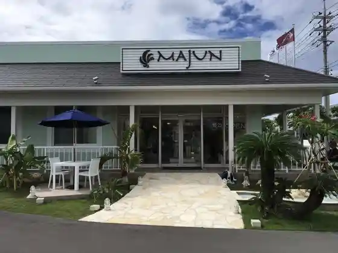
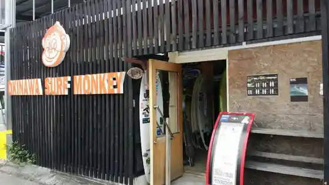
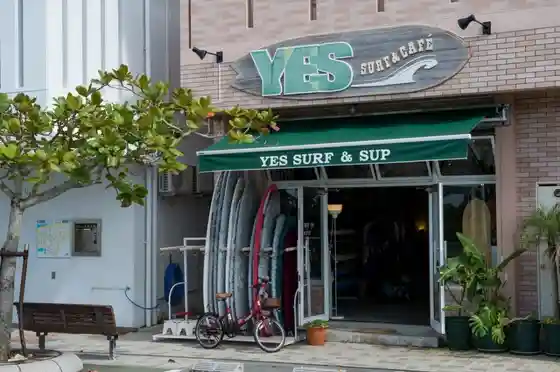
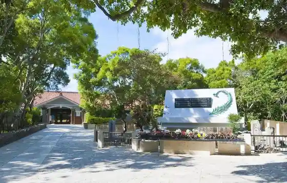

MAJUN OKINAWA Autoretto Itoman Mise
Itoman, Okinawa · 098-851-3238 · Official / source link

OKINAWA SURF MONKEY
Itoman, Okinawa · 090-1179-6281 · Official / source link

YES SURF
Itoman, Okinawa · 098-994-5633 · Official / source link

Himeyuri no to Himeyuri Heiwa Kinen Museum
Itoman, Okinawa · 098-997-2100 · Official / source link

Himeyuri Hall
Itoman, Okinawa · Official / source link
Pamuhiruzugorufu Resort Club
Itoman, Okinawa · 098-994-0002 · Official / source link
Famazumagatto Itoman (Umanchu Market)
Itoman, Okinawa · Official / source link
Puzochiizu Ga Kisera Itoman Kanegusuku Mise
Itoman, Okinawa · 098-960-1325 · Official / source link
Ippan Shadanhojin Itoman Tourism Association
Itoman, Okinawa · 098-840-3100 · Official / source link
Yumi Do
Itoman, Okinawa · 098-997-3443(0989973443) · Official / source link
Nanzan Kantorii
Itoman, Okinawa · 098-997-2025 · Official / source link
Santen Ke
Itoman, Okinawa · Official / source link
Kochi Hara Aka Hi Gi Hara Ryo Tonaka Haka
Itoman, Okinawa · Official / source link
Okinawa Banraifu
Itoman, Okinawa · 080-6155-2260 · Official / source link
Okinawa Yotto Taiken Seringu
Itoman, Okinawa · 090-9786-3847 · Official / source link
Okinawa Heiwa Kinen Do
Itoman, Okinawa · 098-997-3011 · Official / source link
Okinawaken Ei Heiwa Kinen Park
Itoman, Okinawa · 098-997-2765 · Official / source link
Okinawaken Heiwa Kinen Museum
Itoman, Okinawa · Official / source link
Awamori Masahiro Gyararii (Masahiro Shuzo)
Itoman, Okinawa · 098-994-8080 · Official / source link
Umi no Asobi Tokoro
Itoman, Okinawa · 098-960-1380 · Official / source link
Umi Budo Farm Umi N Michi ~uminchi
Itoman, Okinawa · 098-994-0016 · Official / source link
Ryukyu Garasu Village
Itoman, Okinawa · 098-997-4784 · Official / source link
Ryukyu Kokuto
Itoman, Okinawa · 098-992-8300 · Official / source link
Hakugin Do
Itoman, Okinawa · Official / source link
Itoman Takushii Omakase Kanko Puran
Itoman, Okinawa · Official / source link
Itoman Ba Itoma Ru
Itoman, Okinawa · 098-987-1037 · Official / source link
Itoman Bussan Center Yu Shoku Rai
Itoman, Okinawa · 098-992-1030 · Official / source link
Itoman Gyogyo Kyodokumiai O Sakana Center
Itoman, Okinawa · 098-992-2803 · Official / source link
Bingata Workshop Shu Kurenai
Itoman, Okinawa · 098-992-2778 · Official / source link
Bi Bi Beach Itoman no Uoruato
Itoman, Okinawa · 098-840-3451 · Official / source link
Roadside Station Itoman
Itoman, Okinawa · 098-987-1277 · Official / source link